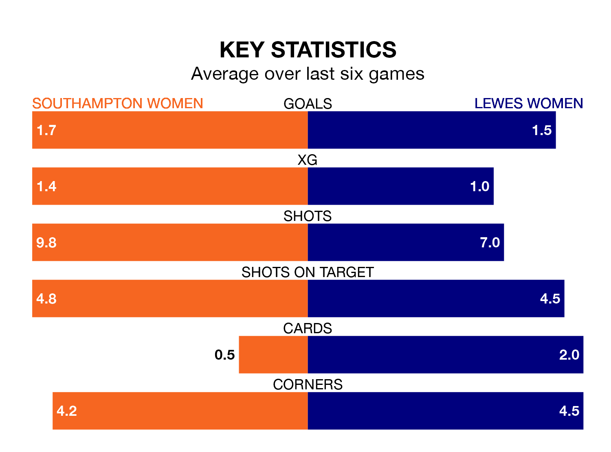

Struggling Southampton Women face Lewes Women at St. Mary's on Sunday looking to build on a win in their last league outing.
After securing all three points with a 1-2 victory over Blackburn Rovers Women on March 24, the Saints sit fourth in the FA Women's Championship.
They travel to play a Lewes side 11th in the standings, who lost in their last match, 2-0 against Birmingham City Women.
With 34 goals in 19 games so far this season, Southampton are the league's second-highest scorers with 1.8 goals per game. And they are conceding fewer than average, letting in 21 goals at a rate of 1.1 per game.
Lewes, meanwhile, are below average scorers, with 1.0 goal per game, compared to a league average of 1.4. They have conceded 1.7 goals per game.
In Sophia Pharoah and Katie Wilkinson, the Saints have two of the league's most on-form strikers so far this season. They have notched eight goals each, to sit fourth in the scoring charts.
The visitors' top scorer, with five goals in 17 games, is Grace Riglar.
In the last five years, Southampton and Lewes have played each other on four occasions. Southampton won two of them, Lewes one, and they drew once.
On average, the Saints scored 2.0 goals and Lewes 1.2 in those matches.
Their last meeting was on August 27, when Southampton won 4-1 away.
The home side are in mixed form in the FA Women's Championship, with three wins and three losses from their last six games.
With two wins and a draw over that period, Lewes's form is slightly worse – they have taken seven points from 18, compared to Southampton's nine.
Updated: 12:16 (UTC), 25/03/24